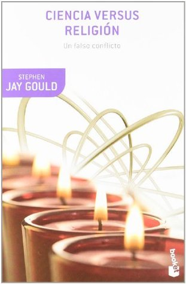

Ciencia versus religión: Un falso conflicto
Reseña por Jorge I. Zuluaga

Ver reseña en GoodReads (necesita cuenta)
La primera sorpresa que me llevé al leer "Ciencia versus religión" fue la erudición que evidencia Jay Gould en este libro, su aparente conocimiento del mundo clásico, incluyendo las lenguas latina y griega, de la Historia y de la filosofía, incluso su conocimiento aparentemente profundo de la religión cristiana (una condición necesaria para escribir un libro sobre este tema).
No es común encontrar entre las personas de la ciencia profesionales que tengan además una amplia cultura humanística. Es cierto que grandes divulgadores y divulgadoras como Carl Sagan, Lynn Margulis o Isaac Asimov, son –y fueron– también grandes humanistas, la mayoría de autores en estas disciplinas no lo son realmente. Así que fue grato saber que esta discusión la haría alguien suficientemente ilustrado en una variedad más amplia de disciplinas.
Pertenezco a ese grupo de personas a las que va dirigida en parte la crítica que hace Jay Gould en este libro; en particular, aquellos que asumimos una actitud militante frente a la separación radical de las ciencias –o del pensamiento científico– y de la religión o en general de la superstición y el pensamiento mágico; una identificación –no muy acertada como he empezado a entender– que es propia del tipo de ateismo militante con el que me he identificado por mucho tiempo.
El libro es una defensa de una postura filosófica que Jay Gould nombra con el acrónimo de MANS, magisterios que no se superponen o en inglés –como averigue posteriormente en wikipedia– NOMA, non-overlapping magisteria.
La idea básica del MANS es que tanto el pensamiento científico (el método hipotético deductivo soportado en evidencias que lo definen además del corpus de conocimientos que se ha construído a lo largo de la historia con ese método – conocimiento científico), y el pensamiento religioso, es decir, la búsqueda del sentido, la trascendencia y la razón profunda de nuestra naturaleza y acciones, son complementarios y no excluyentes.
Según Jay Gould la "eterna" lucha de Ciencia versus Religión ha surgido de algunos malentendidos históricos, ha sido motivada por los momentos en los que las religiones organizadas han establecido alianzas perversas con el poder secular (pe. el papel del cristianismo en el poder en la Europa medieval y en la edad moderna), alianzas que han desvirtuado su papel; pero más importante, el conflicto, según Jay Gould, surge de entender mal lo que ambos magisterios persiguen.
Para sustentar su posición, Jay Gould hace una presentación que brilla por su organización y rigor, a pesar de no perder en ningún momento un tono relativamente desenfadado e informal que hace que el libro no se convierta en un ensayo filosófico pesado e impenetrable. Se encarga con juicio de enunciar bien el problema y lo hace con ejemplos y analogías que ayudan a quiénes no tenemos una formación académica en filosofía o en ciencias humanas. Posteriormente hace un recorrido histórico por la división entre ciencia y religión, con especial énfasis en la agudización del conflicto que se produjo en el período que siguió a la publicación del "Origen de las especies de Darwin". Aquí, Jay Gould ahonda también en la lucha legal que se produjo en Estados Unidos durante buena parte del siglo xx, entre los enemigos de la evolución y promotores del creacionismo y las autoridades seculares.
Está última parte, si bien interesante, creo que le resta interés al texto y puede resultar lo suficientemente aburrida y en especial muy local como para que algunas personas que leen el libro espontáneamente lo abandonen finalmente. Mi recomendación: ¡no lo hagan!
Finalmente Jay Gould, hace un análisis de las razones psicológicas para el conflicto, pero también sobre el por qué ese conflicto en realidad es imaginario. En está última parte Jay Gould presenta su propuesta (si se puede llamar así) para una convivencia "pacífica" –o irénica como aprendí en el texto– entre la ciencia y la religión.
¿Logra el texto su cometido?, es decir ¿puede cambiar, por ejemplo, la actitud separatista hacia la religión de un ateo militante como lo he sido yo la mayor parte de mi vida adulta?.
No sé si pueda generalizar, pero en realidad los argumentos, la forma de presentación de los mismos en este libro, así como la autoridad de la que emanan –y esto no es poco importante– en realidad si lograron que revisara algunas convicciones sobre la tajante división entre ciencia y religión que venía sosteniendo. Me hicieron ver los grises en los que antes veía solo blanco y negro. Bueno, al menos lo digo por mí (pero quiénes me conocen también reconocerán que no es poca cosa).
Me encanto la analogía que presenta Jay Gould de la interface entre la ciencia y la religión como una superficie con una estructura fractal. En lugar de pensar que estos dos dominios del pensamiento son terrenos divididos por una muralla, terrenos que si bien contradictorios deben convivir en paz, la posición de Jay Gould parece basarse en su propio conocimiento del mundo natural. Las fronteras entre la ciencia –el logos– y la religión –el mitos– podrían ser mucho más complejas, parecerse más a las que existen entre dos líquidos inmiscibles que se han sacudido, o los borrosos límites que existen entre dos biomas –ecosistemas– que coexisten o tienen una frontera en el mismo espacio (pe. el bosque y la pradera).
Para citar un ejemplo de esto, pensemos en uno de los temas centrales de la religión: la muerte.
Si bien la ciencia, con su método y corpus de conocimientos, tiene mucho que decir sobre el momento en el que cesa la actividad que define el "estar vivo" en un organismo complejo, en particular en el cuerpo humano –que es el foco de la religión– en realidad aporta muy poco frente a la pregunta de lo que la muerte misma significa para los humanos, de lo que la conciencia de ese evento definitivo dispara en nuestra mente o los cambios mentales que se operan frente a la muerte de nuestros seres queridos. Aceptemos o no que existe un conflicto, creamos o no en el poder ilimitado de la ciencia para develar los secretos de la naturaleza, a los humanos –y muy posiblemente a otros animales– les preocupa la muerte y lo que ella "significa" para nuestra conciencia. La pregunta es si esa preocupación puede ser completamente satisfecha con respuestas científicas o si necesita de "algo más".
Este tipo de razonamientos y de preguntas son las que ahora me estoy permitiendo tener, incluso en en medio de mi radicalidad antireligiosa. No ha sido solo este libro lo que me ha llevado a considerar que tal vez una posición muy rígida sobre este supuesto conflicto –ciencia versus religión– me esté haciendo perderme de algo. Otros libros, hablar con amigos y amigas creyentes y experiencias personales profundas y traumáticas –tal vez ahí está la raíz de nuestra necesidad de "algo más"–, han contribuido también con el cambio.
¿Será para bien? ¡no lo sé!
Lo que sí se es que ahora no estoy seguro de que la ciencia pueda ayudarme a responder siquiera esta sencilla pregunta.
Sea que militen en el ateismo –como yo– o que, amando la ciencia aprecien también sus propias intuiciones religiosas o practiquen con vehemencia los rituales de sus abuelas, no dejen de leer este libro.
No dejen de leer a Jay Gould.
Yo, personalmente, desde ahora mismo, comienzo a buscar sus otros ensayos y espero descubrir mucho más del humanismo que descubrí aquí.